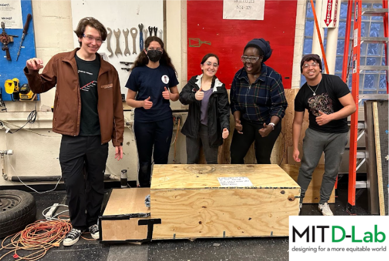
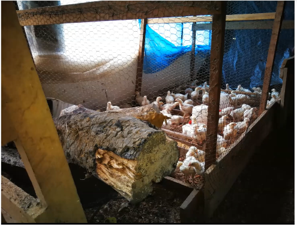
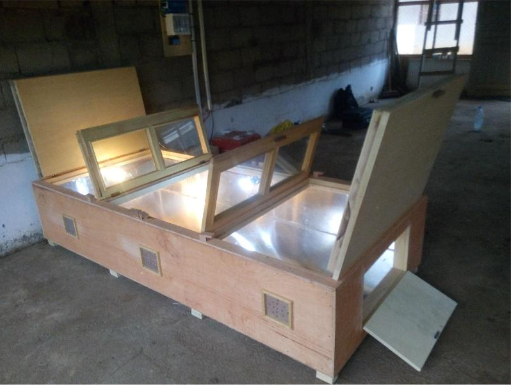
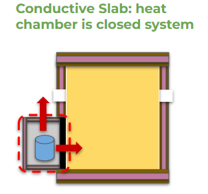

Energy in Global Development Project | Chicken Brooder Box Heating System
Young chicks are unable to maintain their required body temperatures, and require an external heat source when external ambient temperatures dip. In this project overseen by MIT’s D-Lab, and in partnership with BiObala, African Solar Generation and the Antenna Foundation, I worked in a team of 4 to brainstorm and develop an improved heating system for chick brooder boxes in smallholder farms in Obala and Yaounde, Cameroon.
Key Skills : Independent research and experimentation, wet lab skills, solvent casted membranes, thin membrane research, porometry permeability tests, scanning electronmicroscopy
Framing the Problem
From conversations with our partners and previous projects, we gathered that currently most small chicken farmers in Cameroon keep their chicks warm by having a fire near their chicks.
This method is time-consuming for farmers, who often have to check the fires multiple times a night, and also exposes the farmers to pollutants that negatively affect their health.
Our partner African Solar Generation (ASG) designed and built a solar brooder box to address these issues. The box used energy from solar photovoltaic panels to charge a battery and power a heat lamp, which kept the chickens warm.
However, the box cost more than 1000 US dollars, much more than most Cameroonian chicken farmers could afford. In addition, on days when there was not enough sun to fully charge the battery, the box was not able to keep the chicks warm overnight.
Prior D-Lab Energy teams innovated on existing chick brooder boxes by introducing phase change materials (PCM) such as paraffin and beeswax as heat sources; however, we found the process for preparing beeswax “thermal batteries” to be challenging for farmers due to its time and effort requirements and safety concerns.
In response, we investigated the feasibility of utilizing hot water as a heat source to reduce costs and increase usability.
Experimental Design and Results
Baseline Validation Test
An initial proof of concept experiment was conducted to test the viability of water as a heat source. Using an existing Brooder Box Built by previous teams. We placed six 24-fl. oz. glass jars filled with boiling water into the main brooder box and allowed the heat to disperse throughout the box. We used an Arduino Uno and temperature probes to measure temperatures within the water in the jars (“water”), outside of the jars (“near end”), at the far end of the box from the jars (“far end”), and ambient temperature (“ambient”). As illustrated below, the brooder box was able to maintain temperatures above 30 ºC for 7.78 hours
This proved the viability of water as a heat source for an extended period of time, however the implementation would have to be revised to better fit the project constraints:
- ideal temperatures fell in the range of 30-37 degrees celcius. It was necessary to maintain that range throughout the entire duration of time
- Temperatures werer extremely hot right next to the jars. We needed to develop some sort of insulating chamber to protect the chicks that may wander close to the heat source.
- the longer the temperatures stayed in range the better. OUr partners wanted us to shoot for 12+ hours in the ideal temperature range
- reproducibility of results in different sized boxes. There was a need to develop a heat transfer model that would allow the local farmers to achieve similar results in different volumetric boxes, so as to make use of existing brooder boxes
Mathematical Modeling, Experimentation and Scaling
We brainstormed different configurations for the heat chamber setup containing the hot water "thermal batteries". Using one of the configurations, which was a heat chamber with a conductive slab, we were able to develop a heat transfer model using a thermal resistivity circuit.
With this model plugged into MATLAB, we were able to graph the theoretical water temperature profile over time, as well as the Chick brooder box temperature over time. We then validated this model by running the experiment overnight and obtaining readings consistent with the model.
This result confirmed the viability of the resistivity model as a tool to inform future experimental design decisions, particularly what parameters can be used to accomplish the desired temperature profile which was useful information for both convective and conductive experiments since there are shared parameters such as the resistivity of water convection in the pot and resistivity across the heat chamber insulation. It also helped us narrow down two tunable parameters that can be used to control heat output and maintenace, that is the insulation of the thermal batteries themselves, and the insulation within the heat chamber.
This proposed solution was attractive to the project partners since, if properly utilized, only needed water to be boiled once, as opposed to a constantly running fire for heat. This step could also be absorbed into other daily activities such as before cooking a meal, in order to take advantage of the lit fire
Future work was necessary, however, to further refine the insulation properties of the heat chamber and batteries in order to moderate peak temperatures, as well as the heat transfer rate from the hot water to suit the needs of existing chick brooder boxes in shareholder farms. This would involve fieldwork travel to Cameroon to build the heat chambers using locally available materials and demonstrate their function to the farmers.
Ideally, we would develop a standard custom heat chamber to match the specifications of the larger brooder boxes already built by our project partners for use with solar heating.
Further side projects would include developing an attached temperature monitoring panel similar to our experiments' arduino setup, for the farmers to be able to check the internal temperature of the box without opening it and losing heat. In addition, the parnters expressed the desire to harness their solar heating structures to heat the water, for further sustainability gains in farms where the solar heating costs were not a constraint.